MIPI-CSI-1
本文最后更新于：2024年4月10日 上午
- 参考
1. CSI (Camera Serial Interface) Layer Definitions
- 观察下图，可以看到CSI是单向差分串行接口，传输数据和时钟信号。CCI(Camera Control Interface)是双线、双向、半双工的串行接口。数据传输协议符合I2C标准。I2C相关知识见这篇博客。
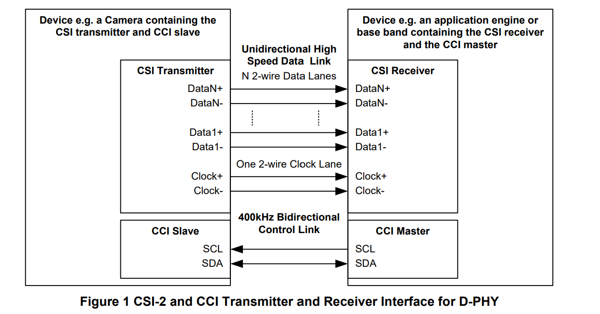
- 如下图所示，CSI-2可以分为5层，分别为：应用层、组包/解包层，底层协议层（Low
Level Protocol）、通道管理层和物理层。下面对每一层进行解释。
- PHY Layer：物理层
- 该层定义了传输介质，输入/输出电路和时钟的机制，以便可以正确的从bit stream中捕获正确的0/1.
- 记录传输介质的电气参数特性以及数据和时钟之间的时序关系，记录了传输的起始位(SoT)和终止位(EoT)。
- Protocal Layer：协议层
- Pixel2Byte/Byte2Pixel Packing/Unpacking Layer：像素/字节转换层。
- Transmitter在将从Application接收到的数据发送前需要将像素数据转换为对应的字节流。Receiver在将数据提供给Application之前，需要将字节流数据转换为像素数据。
- Pixel2Byte/Byte2Pixel Packing/Unpacking Layer：像素/字节转换层。
- Low Level Protocol(LLP)：底层协议层
- 指的是SoT与EoT之间的数据包字节流协议，最小单元是字节。
- Lane Management：Lane管理层
- Lane 是指一对差分数据对，在上面Figure1中，有N对差分数据，所以有N个Lane。
- 在Transimitter端，需要把上层打包好的数据按顺序依次Distribute到不同的lane上。
- 而在Reciever端需要从不同的lane上依次接收数据并把其按顺序Merge起来。
- 总结
- 在Transmitter端，从Apllication层接收到的数据，被打包成字节流数据包，可以选择将错误检查信息附加在要发送的数据流上，在底层协议层进行传输，并在Lane Management层进行分发到不同的Lane上。
- 在Reciever端，从PHY层接收到数据后，经过Lane Management层进行按序Merge，在底层协议层传输时，可以将Transmitter附加的信息剥离下来，并通过相对应的逻辑进行解释，检查数据发送的完整性和正确性。
- Application layer
- 该层主要用于不同场景对数据进行处理的过程，对于Transimitter，一般为Camera生成数据包；对于Reciever，多为SOC对数据进行处理。
- PHY Layer：物理层
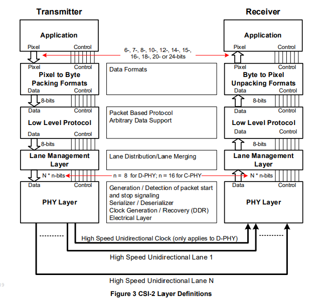
2. Lane Management
2.1 Multi-Lane Distribution and Merging
对于带宽有高要求/想要降低时钟频率的应用，可以通过扩展多条Lane来得到更大的带宽。
在PHY层和协议层之间还存在一个处理多通道配置的层，下面介绍TX端和RX端该层的结构。
Transmitter端
- 下面两张图分别为D-PHY和C-PHY下 TX端 Lane Manager Layer的结构示意图。
- 包含通道分配功能(Lane Distribution Function,LDF)，LDF模块接收low level protocol(LLP)层输入的数据包字节序列，并将它们分布到N个通道中，之后依次通过SerDes和Lane传输出去。
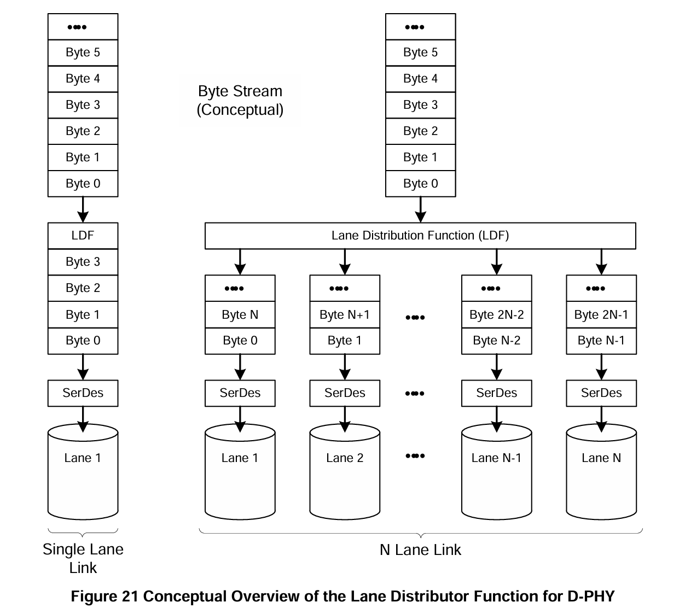
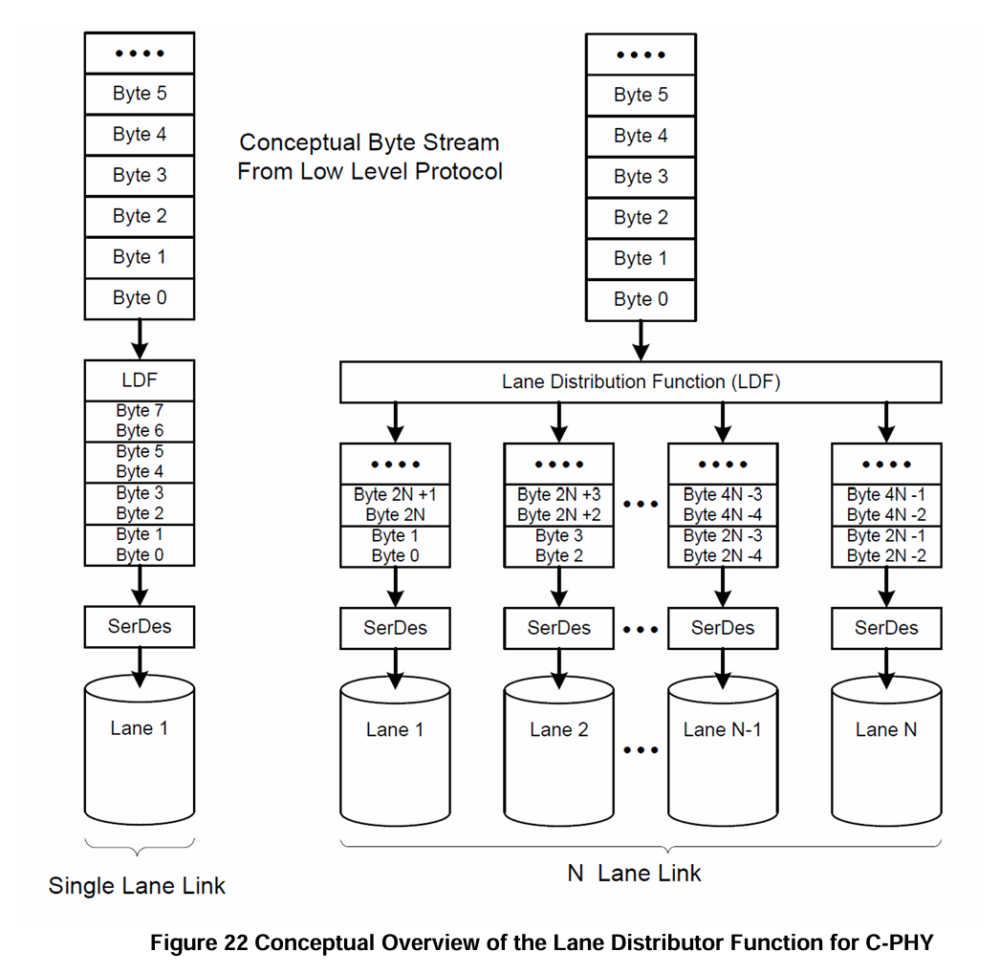
Reciever 端
下面两张图分别为D-PHY和C-PHY下 Lane Manager Layer的结构示意图。
包含通道合并功能(Lane Merging Function,LMF)，从N条Lane中收集字节，并将它们合并为完整的数据包，送到LLP层的分解器(decomposer)处理。
在Transmitter端发送数据之前，所有的Lane会并行的执行SOT序列，以向后续模块指示接收数据包开始的第一个字节。
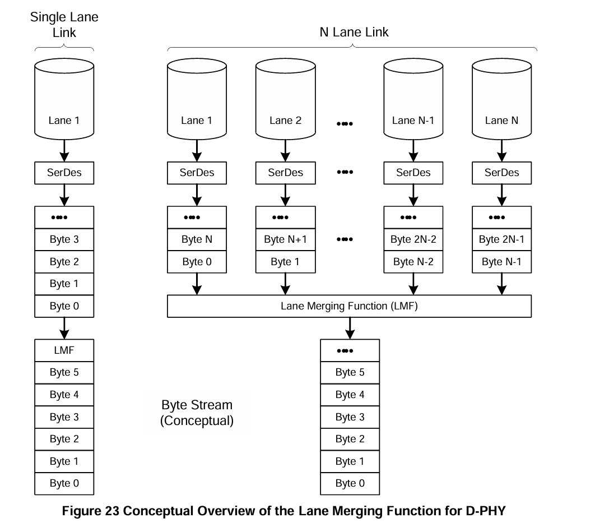
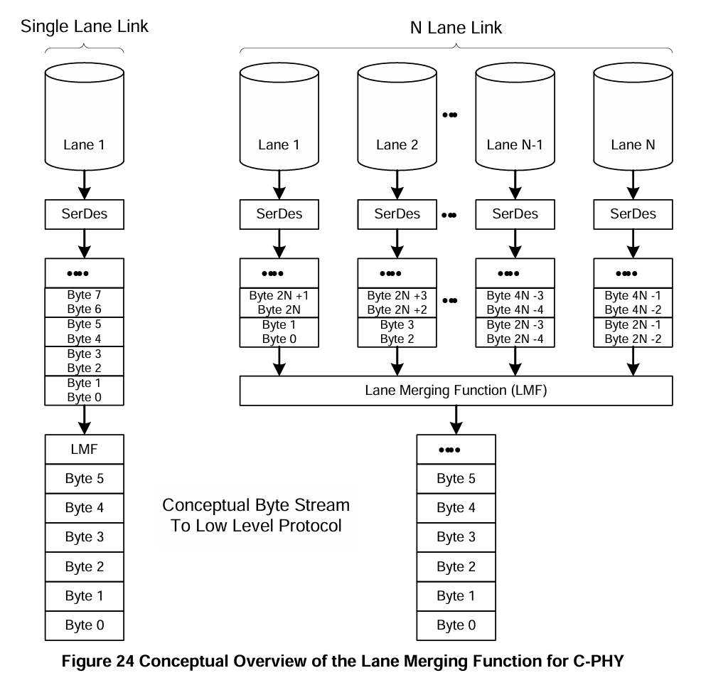
在Lane的数据分发实例
DPHY
下图为DPHY层两条Lane的传输情况，由于总字节数可能不是通道数N的整数倍；因此在传输结束时，可能会有额外的字节。
- 处理方法
- 一条/多条Lane出现无数据发送时，会让对应的Lane提前发送EOT序列完成传输，并进入LPS状态。
- 其余还有有效数据的Lane并行的将最后一次数据传输完成之后，发送EOT序列。
- 并无效掉所有Lane上的数据，表示无数据要传输。
- 处理方法
对于多条Lane，同样道理。
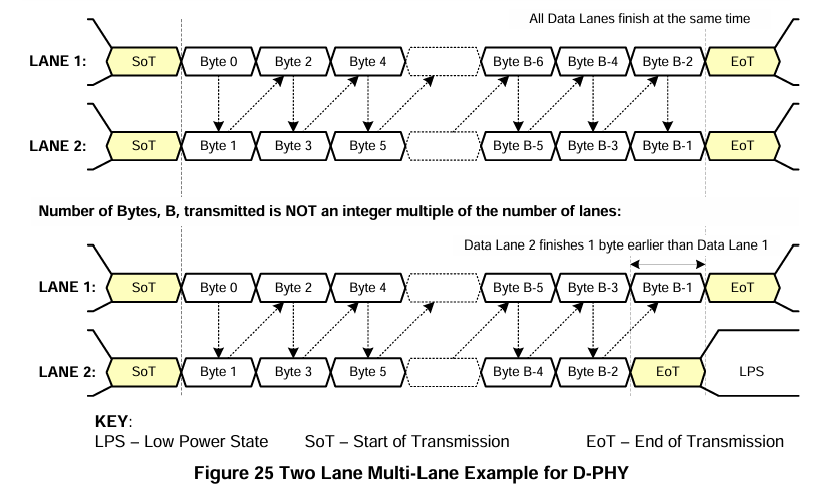
当进行短包传输时，即传输字节数=4，而Lane 个数 N>4，不接受字节的通道保持在LPS状态。
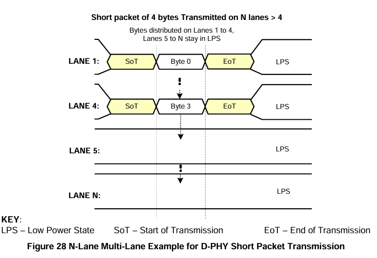
CPHY
下图为CPHY层两条Lane的传输情况，其不存在DPHY有额外字节的问题，因为在LLP层会确保传输字节数B是2N的整数倍。
在发送最后一组并行的数据包之后，会同时无效所有Lane中的数据，并通知每条Lane，可以开始它的EOT序列。
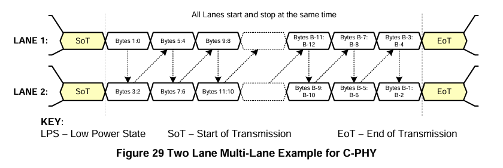
2.2 Multi-Lane Interoperability(互操作性)
当 Transimitter PHY层的Lane的个数M与Reciever PHY层的Lane的个数N不相等时，主要分为下面两种情况。
- （1）M <= N：不会损失性能，因为接收机有足够的数据通道来匹配发射机。
- （2）M > N：可能会出现性能损失（如帧率），因为接收机的数据通道少于发射机。
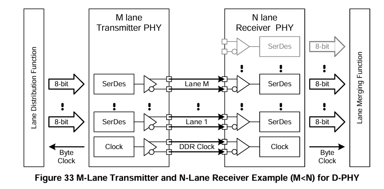
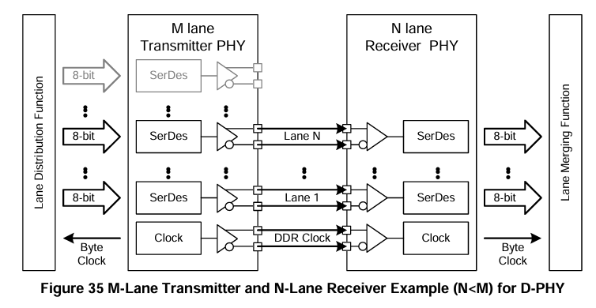